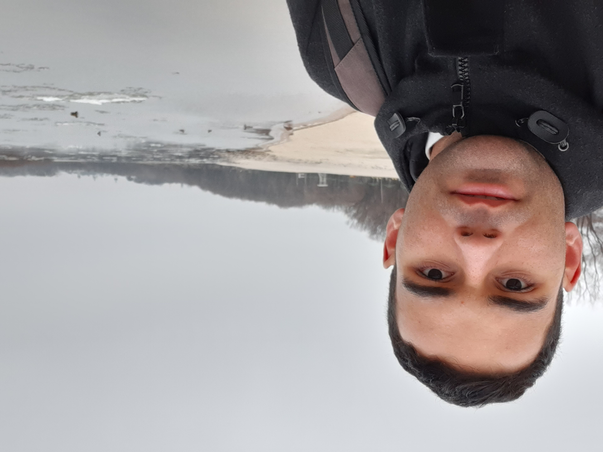

Michael Oelschig | WDD 130
I enjoy video games, anime, music and hiking. I don't enjoy loud noise, large crowds and pork sausages. I am 26 years old and plan on pursuing programming as a career.
I enjoy video games, anime, music and hiking. I don't enjoy loud noise, large crowds and pork sausages. I am 26 years old and plan on pursuing programming as a career.